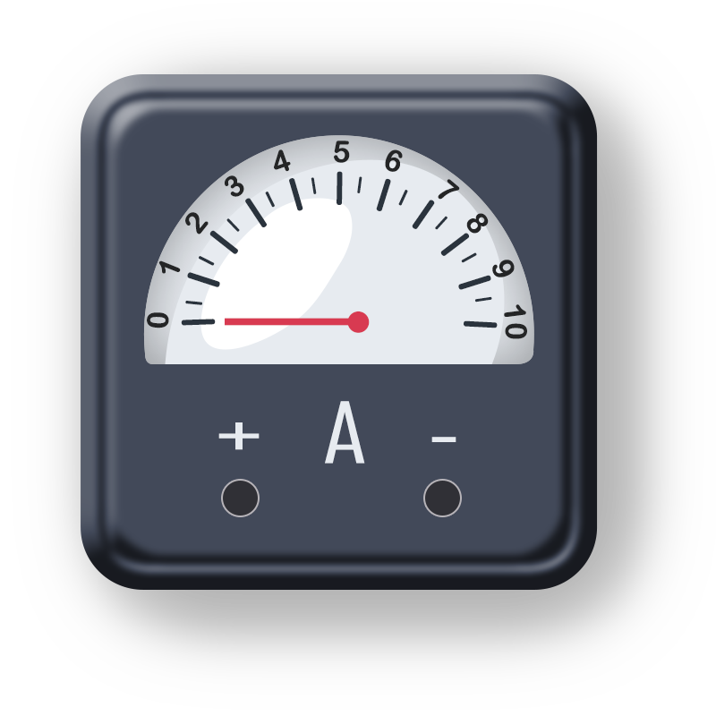

Instructions
Step 1:
The aim of this experiment is to get familiarized with the electrical devices.
Step 2:
Click on ‘Next’ Button to view the next electrical device.
Step 3:
Click on ‘Previous’ button to go back to previous electrical device.
Step 4:
Repeat Step 2 and 3 until you reach the end of the experiment.
Instructions
TO GET FAMILIARIZED WITH THE ELECTRICAL DEVICES.

Figure 1: Analog Ammeter
An ammeter is measuring instrument used to measure the electric current in a circuit. Since, electric current measured in amperes(A), hence the name is ammeter.
Instruments used to measure small currents, in the milliampere or microampere, are designated as milliammeters or microammeters.
Early ammeters were laboratory which relied on the earth’s magnetic field for operation.
An ammeter’s current sensitivity is determined by the amount of electric current required by the meters coil to produce the required FSD(Full scale deflection) movement of the pointer. The amount by which the coil moves, called “deflection”, ( Φ ) is proportional to the strength of current flowing through the coil needed to produce the magnetic field required to deflect the needle by an amount, given in degrees (or radians) per ampere, °/A or rad/A.
Therefore, the smaller the amount of current required to produce the required deflection, the greater the sensitivity of the meter. Then the pointer of an ammeter moves in response to a current, so if the meter movement requires only 100uA for full scale deflection, it will have a greater sensitivity than a meter movement which requires 1mA for its FSD.
It measure DC or AC both electric current. It can measure wide range of value. To measure the current value ammeter in connected in the series of circuit. Ammeter has very low resistance. Digital ammeter designs use a shunt resistor to produce a calibrated voltage proportional to the current flowing.
There are various type of ammeter.
Moving-coil ammeters
Electrodynamic ammeters
Moving iron ammeter
Digital ammeter
Integrating ammeters